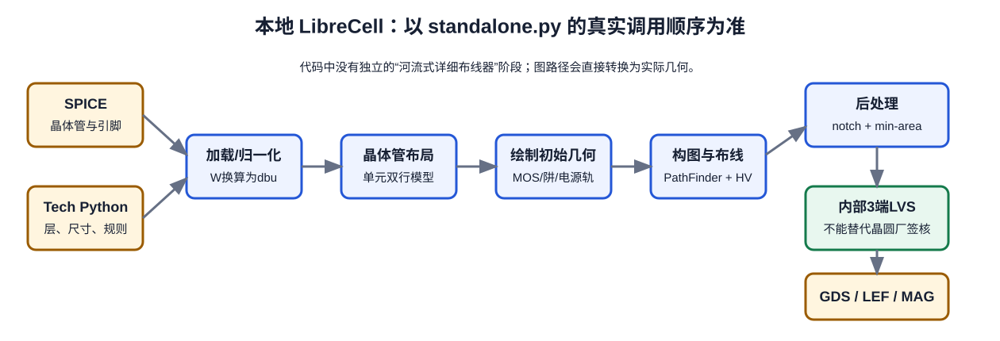

第 14 章 沿源码走完整流水线
知道每个中间状态在哪里，才有能力修改而不靠猜
- 从 CLI 入口追到 netlist、placement、geometry、routing、post-process、LVS 和 writer。
- 理解每一步的输入/输出、不变量与失败模式。
- 建立“改代码→单元测试→小单元→整库→外部签核”的修改纪律。

14.1 入口：standalone.main
argparse解析真实 CLI，按-v/-q/--log配置日志。load_tech_file执行 Python 技术文件。- 由字典把
--placer和--signal-router变成对象。 - 组合
HVGraphRouter(PathFinderGraphRouter(signal_router))。 - 构造
LcLayout并调用create_cell_layout。 - 运行内部 LVS；通过后遍历
output_writers。
源码入口：librecell-layout/lclayout/standalone.py。第一次阅读不要从文件顶部逐行滚动，先找 main、create_cell_layout 和编号方法。
14.2 00–01：校验技术与读取网表
_00_00_check_tech 当前只做很少的检查，例如 multi_via 层对顺序；_00_01_prepare_tech 把 spacing 字典变成无向图。
_01_load_netlist：
- 通过 KLayout SPICE reader 查找 subckt；
- 用模型名首字母判断 NMOS/PMOS；
- 识别唯一 supply 与 ground，非电源端口作为 I/O pin；
- 把 SPICE W 转为 DBU，乘全局 sizing factor，并夹到器件最小宽度。
这里是新工艺模型名、器件参数和 body 语义最早需要扩展的位置。建议把“模型名→ChannelType”从隐式字符串规则改为技术文件中的显式 mapping/callback，并为未知模型报错。
14.3 02–03：内部版图与抽象放置
_02_setup_layout 创建 top cell，并按固定内部 layermap 为每个语义层建立 shapes 容器。开启 routing graph debug 时还会创建 debug-purpose 层。
_03_place_transistors 调用选定 placer，得到两行 slot cell。若传入 placement path：
- 文件存在：校验 cell、晶体管名、网络和位置后加载；
- 文件不存在：运行 placer 后保存 JSON。
这是保证 A/B 实验可比的接口，也意味着 stale placement 会绕过新 placer。
14.4 04–05：画晶体管和单元模板
DefaultTransistorLayout 用抽象 slot 与技术参数生成：
- NMOS/PMOS 对应的 diffusion；
- gate Poly、well enclosure；
- 带
netproperty 的 source/drain/gate shapes； - off-grid terminal nodes，供后续路由接入。
_05_draw_cell_template 计算 cell width，画模板、VDD/VSS rail 和 power pin shapes。若新工艺需要 implant、tap、特殊 gate cut 或 Fin quantization，仅调 GDS map 无法解决，应在 transistor/template abstraction 层增加显式生成逻辑。
14.5 06–08：构图、路由和绘制
_06_route 包含了构图和实际多 net 路由：
- 创建
Grid2D与基础 layer-coordinate graph； - 删除与已有几何冲突或已预布的边；
- 提取/嵌入 terminals，创建 virtual terminal/pin；
- 建立 spacing conflict 与 reserved node 集合；
- 调用 HV/PathFinder/signal-router stack。
_08_draw_routes 把 routing tree 画成 wire/via 并合并同层多边形。没有另一个 river routing 方法。
14.6 09：有限的后处理
_09_post_process 的核心工作：
- 对配置了
minimum_notch的层填凹槽，连续做两次； - 只有
connectable_layers可在全层 region 上填充并潜在合并 shape；其他层逐 polygon 处理以避免短接不同网络； - 调用 SMT-based cleaner 修复配置的
min_area； - 从 virtual pin 邻接路由点注册 pin geometry，画 pin/label。
14.7 内部 LVS 与 writer
create_cell_layout 返回后，main 才读取参考网表、把 MOS4 转为 MOS3、从 layout 提取网表并比较。失败且未使用 debug/--ignore-lvs 时退出，不写最终文件。
通过后依次调用 writer：
- GDS writer：remap internal layers、设置 GDS DBU、写
CELL.gds； - LEF writer：由 pin geometries 生成 macro，但当前 direction/use/OBS 有明显 TODO；
- Magic writer：按自己的层名和 scale factor 写
.mag。
14.8 从需求判断修改落点
| 需求 | 首要修改点 | 必须联动的验证 |
|---|---|---|
| 改变基本尺寸/权重 | tech 文件 | unit tests、routing、外部 DRC、metrics |
| 显式模型映射 | lccommon/net_util.py + tech API | NMOS/PMOS/未知模型解析测试、外部 LVS |
| 增加内部层/via stack | layout/layers.py | transistor/template、routing graph、draw route、LVS、writer 全链路 |
| 增加 implant/Vt marker | transistor/template drawing + output map | device extraction、DRC、边界拼接 |
| 修 LEF pin direction/use | writer/lef_writer.py 与 pin metadata | LEF parser、GDS/LEF overlay、P&R smoke |
| 增加 OBS | LEF writer 的内部 obstruction 生成 | pin access 与芯片级 detailed routing |
| 完整 body/tap | 器件/模板、端口和 LVS 提取 | foundry LVS/ERC、latch-up/tap spacing |
14.9 一次安全的源码修改流程
- 写需求和不变量：例如“未知模型必须报错，原 nmos/pmos 行为不变”。
- 先写最小测试：一个正例、一个边界例、一个失败例。
- 只改最小接口：避免同时改层、单位和算法。
- 跑 INV/NAND/NOR：检查 placement、route、内部 LVS、GDS/LEF。
- 跑压力 corpus：AOI/OAI、MUX/XOR、宽器件、无共同 Euler。
- 跑外部 PDK 闭环：DRC/LVS/PEX、abutment、P&R、表征。
- 记录差异：输出 hash、面积、wire/via、违规分类、timing/power。
14.10 高效导航源码
cd /home/jasper/code/github/librecell
rg -n "def create_cell_layout|def _0[0-9]_" librecell-layout/lclayout
rg -n "tech\." librecell-layout/lclayout
rg -n "l_metal2|via_layers" librecell-layout/lclayout
rg -n "TODO|NotImplemented" librecell-layout/lclayout
rg -n "class .*Writer|write_layout" librecell-layout/lclayout/writer对一个技术字段，既要找 tech.field 的读取点，也要找它间接进入的字典/图属性。对一个内部层名，则追到生成、路由、后处理、提取和输出五个方向。
把“模型名首字母判断”重构成技术文件显式 mapping 的设计方案：定义 API、未知模型错误、向后兼容策略和测试，不必立刻编码。若方案没有覆盖外部 LVS，仍不完整。
- 内部 LVS 在 writer 前还是后？
- 增加 M3 为什么至少会影响五个模块？
- notch fill 为什么只允许部分层跨 shape 合并？
参考答案
LVS 在 writer 前。M3 影响内部层/via graph、路由、几何绘制、提取和输出。不同 net 的金属 shape 若被全局填凹槽合并会短路，只有 nwell 等明确 connectable 层才允许。